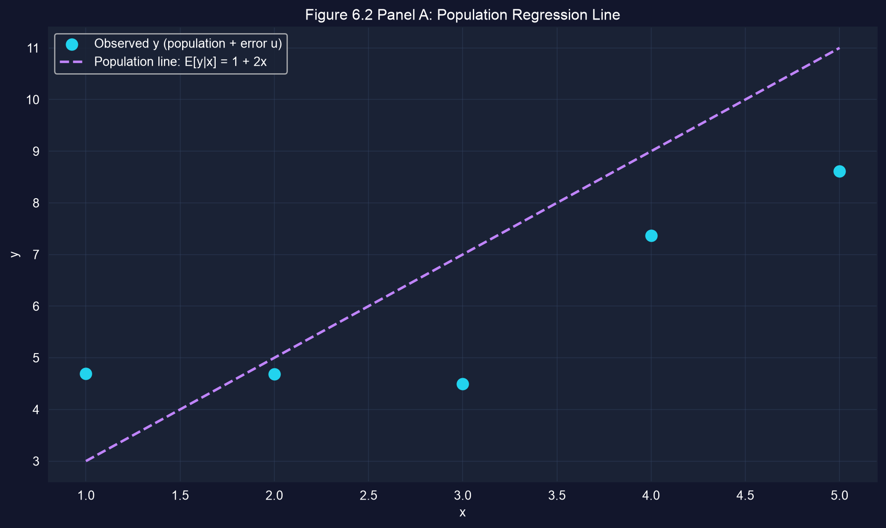
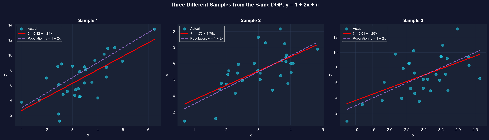
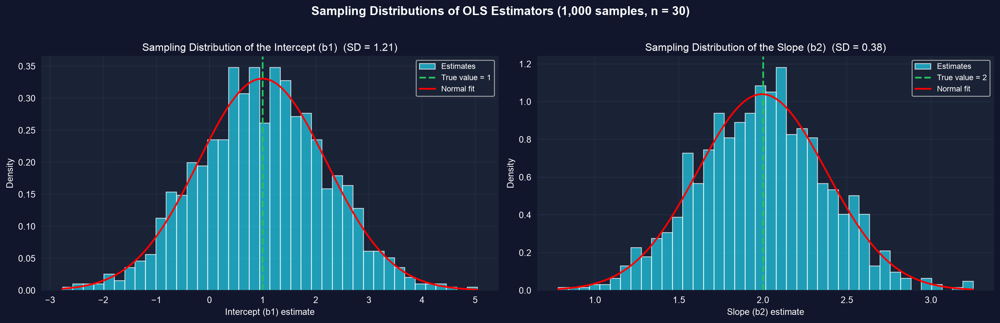

第I幕 · 緊張
第5章では回帰を当てはめる方法を学びました。しかし、私たちの直線 \(\hat{y} = b_1 + b_2 x\) は 1つのノイズを含む標本から得られたものです。その背後には、決して観測できない母集団の直線 \(\beta_1 + \beta_2 x\) が存在します。
では、間違っているとわかっている推定値をなぜ信頼すべきなのでしょうか。本章はそれに答えます — 計量経済学において OLS を標準的な推定量にしている統計的性質とともに。
OLS はすべての標本で間違っています — しかし平均的には正しく、どれだけ間違っているかを正確に述べることができます。
第II幕 · 調査
OLS を研究するために、本章では答えがわかっている 生成データ を使います。
\[y = \underbrace{1 + 2x}_{E[y\mid x]} + u, \qquad u \sim N(0,\ \sigma_u^2=4)\]
真の切片 \(\beta_1=1\)、真の傾き \(\beta_2=2\)。列 Eygivenx はまさに母集団の直線そのものであり、 u は観測される各 y をそこから引き離すランダムな撹乱です。
!pip install -q pyfixest # install pyfixest in Colab (-q = quiet; not preinstalled)
import pandas as pd # tabular data
import pyfixest as pf # pyfixest → OLS, R-style formulas
url = "https://raw.githubusercontent.com/quarcs-lab/data-open/master/AED/AED_GENERATEDDATA.DTA"
data = pd.read_stata(url) # 5 points generated from y = 1 + 2x + u
fit = pf.feols("y ~ x", data=data) # OLS: regress observed y on x
fit.coef() # sample estimates b1, b2
fit.summary() # full table: coefs, SEs, t, p, R2
観測された点（シアン）は真の母集団の直線（紫の破線）のまわりに散らばります。それらに当てはめた標本の直線が一致する必要はありません。
\(n=5\) しかないため、推定値（\(b_2=1.05\)）は真実（\(\beta_2=2\)）から大きく外れます。これはバグではなく、標本変動です。

同一の DGP \(y=1+2x+u\) からの3つの独立した標本は、3本の異なる当てはめ直線を生みます — すべて真の母集団の直線の近くにありますが、どれも一致はしていません。
傾きは 1.81、1.79、1.67、切片は 0.82、1.75、2.01 となりました。1つの標本が真実を明らかにすることはありません — それは推定値の分布からの1つの引き出しを与えるだけです。
import numpy as np # random draws + arrays
import pyfixest as pf # OLS on each simulated sample
np.random.seed(42) # reproducible simulation
n, n_sims = 30, 1000 # 1,000 samples of n = 30
b1_true, b2_true, sigma_u = 1, 2, 2 # the known DGP y = 1 + 2x + u
slopes = [] # collect b2 from each sample
for _ in range(n_sims):
x = np.random.normal(3, 1, n) # draw regressors
u = np.random.normal(0, sigma_u, n) # draw mean-zero errors
y = b1_true + b2_true * x + u # build y from the true model
slopes.append(pf.feols("y ~ x", data=pd.DataFrame({"x": x, "y": y})).coef()["x"])
np.mean(slopes) # ≈ 2.00 → unbiased
np.std(slopes) # ≈ 0.38 → sampling variability
1,000個の標本にわたって、傾きと切片の推定値は真の値を中心とした釣鐘型の曲線を形成し、正規分布の当てはめを追います。
傾きの平均 \(=1.994\)（真の値 \(2\)）、SD \(=0.38\)、切片の平均 \(=0.996\)（真の値 \(1\)）。不偏性と漸近的正規性が直接見てとれます。
1つの標本では複数の世界にわたって平均をとることはできません — しかし広がりを推定することはできます。
\[s_e=\sqrt{\frac{\text{RSS}}{n-2}}, \qquad se(b_2)=\frac{s_e}{\sqrt{\sum_i (x_i-\bar{x})^2}}\]
RSS を \(n-2\) で割るのは、2つのパラメータ（\(b_1,b_2\)）を推定しているからです。傾きは \(s_e\) が小さく（よい当てはまり）、\(x\) が広く散らばっているときに精度が高くなります。
import numpy as np # arrays + math
import pyfixest as pf # to check our hand calculation
data = pd.DataFrame({"x": [1, 2, 3, 4, 5], # artificial 5-point dataset
"y": [1, 2, 2, 2, 3]})
fit = pf.feols("y ~ x", data=data) # fitted line: y_hat = 0.8 + 0.4x
b1, b2 = fit.coef()["Intercept"], fit.coef()["x"]
data["resid"] = data["y"] - (b1 + b2 * data["x"]) # residuals e = y - y_hat
RSS = np.sum(data["resid"] ** 2) # residual sum of squares
Sxx = np.sum((data["x"] - data["x"].mean()) ** 2) # spread of x
s_e = np.sqrt(RSS / (len(data) - 2)) # standard error of the regression
se_b2 = s_e / np.sqrt(Sxx) # standard error of the slope
print(se_b2, fit.se()["x"]) # hand value == model value ✓108か国の収束データでは、労働者1人あたりの資本はその平均とほぼ同じ幅で散らばっています — これはまさに傾きを精度よく推定する条件です。
第III幕 · 解決
異議。 「私の傾きは 1.05 だが、真実は 2.0 だ。この手法は壊れている。」
応答。 1つの間違った推定値は予想されることであり、失敗ではありません。 4つの 仮定（正しいモデル、平均ゼロの誤差、均一分散、独立性）のもとで OLS は不偏であり — 平均的に正しく — そして BLUE、すなわち最も引き締まった線形不偏な規則です。1つの標本は1つの引き出しにすぎません。 標準誤差が、それがどれだけ外れうるかを教えてくれます。
「私の推定値はぴったり正しいか？」と問うのではなく、「それはどれだけ精度が高いか？」と問いましょう — それこそが標準誤差が報告するものです。